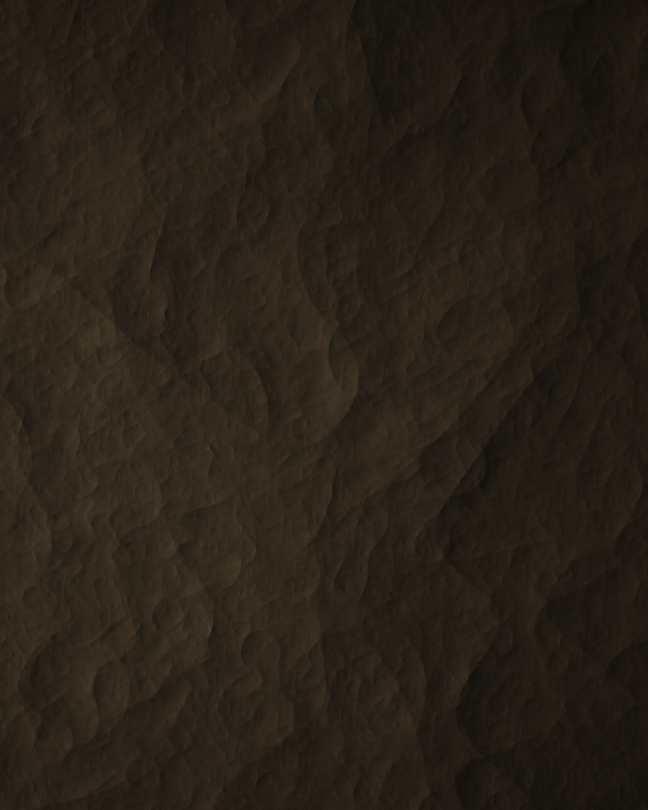
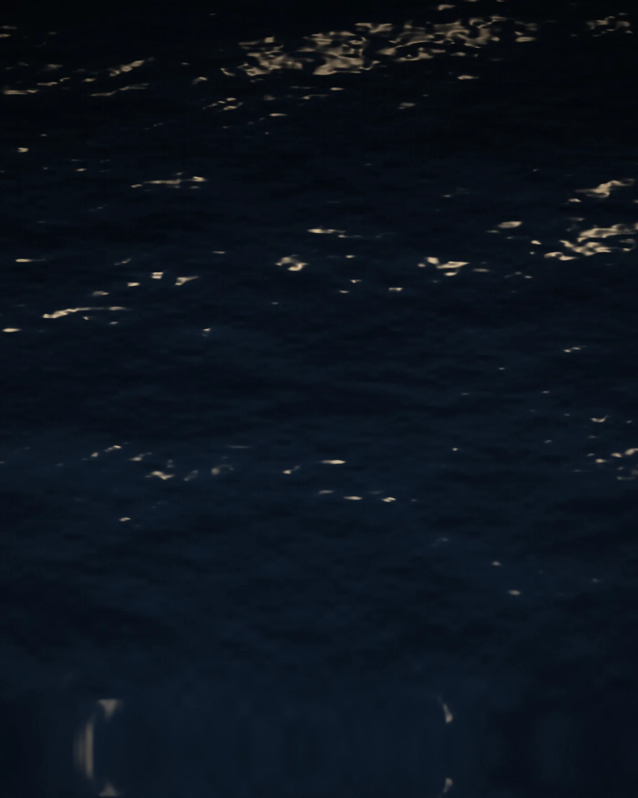
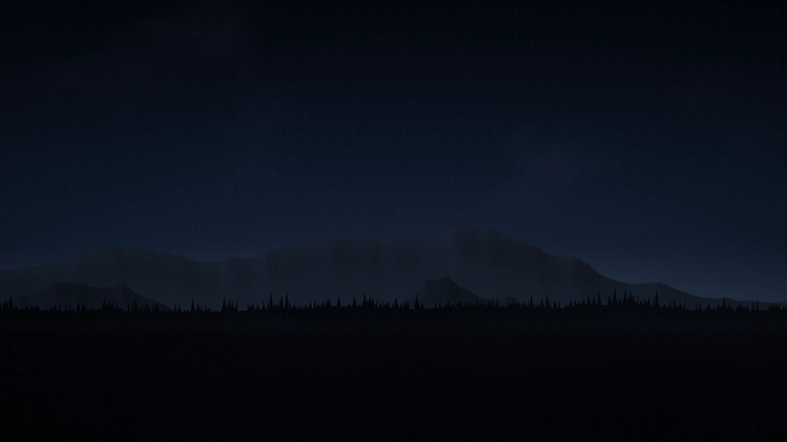
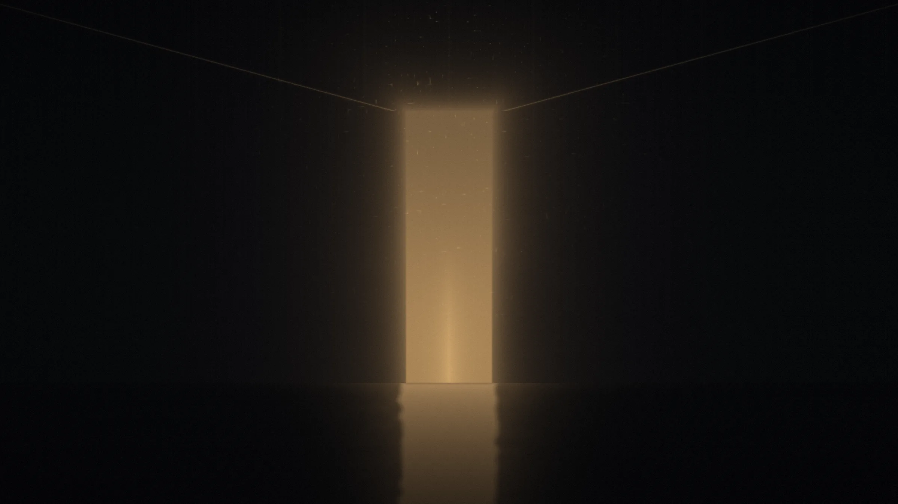

Le monde, à voix basse.
Une expérience pensée dans ses moindres détails, pour celles et ceux qui préfèrent l'essentiel au bruit.
Manifeste
L'exception ne se proclame pas. Elle se reconnaît à la justesse d'un geste, à la qualité d'un silence, au soin porté à ce que personne ne remarque. Chaque détail est pensé pour durer, puis pour s'effacer derrière ce qu'il rend possible.
Quatre manières d'entrer
Chaque univers peut devenir une offre, une collection ou un lieu. Les noms et les textes sont à adapter.
-
Le paysage
Un cadre choisi pour sa lumière, ses distances et son calme.
-
La matière
Des matériaux qui gagnent à être touchés, et qui vieillissent bien.

-
L'eau
Une présence lente, qui règle le rythme de tout le reste.

-
La nuit
L'heure où les choses importantes se disent plus bas.


Franchir le seuil.
Il existe un moment où l'on quitte l'ordinaire. Tout notre travail consiste à le rendre évident.
Ce qui ne se voit pas, d'abord
-
Discrétion
Rien n'est exposé sans raison. Ce qui vous concerne reste entre nous.
-
Précision
Une seule personne suit votre demande, du premier échange au dernier détail.
-
Écoute
Écouter avant de proposer. Proposer peu, mais juste.
Le déroulé
Premier échange
Vous nous dites ce que vous imaginez, même sans savoir encore comment le formuler.
Proposition
Nous revenons vers vous avec une proposition claire, construite pour vous.
Préparation
Chaque détail est réglé en amont, pour que rien ne vous distraie.
Le moment
Il ne vous reste qu’à le vivre.
Carnet de lumière
Une sélection de visuels. Cliquez sur une image pour l’agrandir.
-
Rivage, nuit de pleine lune
-
Reflets sur l'eau
-
Couchant, versant ouest
-
Plans successifs
-
Matière, lumière rasante
-
Lac, heure bleue
Commençons par une conversation.
Dites-nous ce que vous avez en tête. Nous vous répondons personnellement.
Écrire un messageBon Damson… il faut qu’on parle.
Alors, toujours impossible ? 😂
Démonstration terminée. Damson, on attend ton avis.